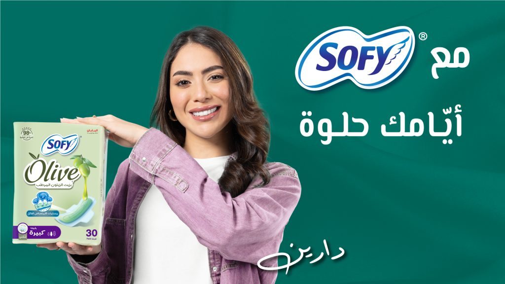
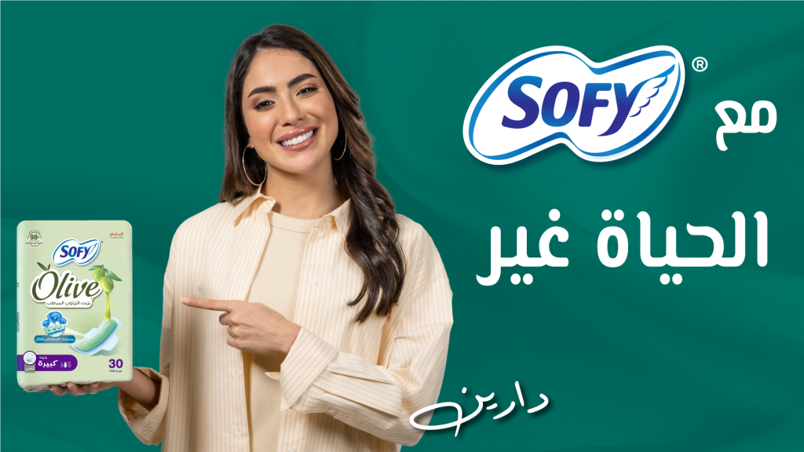
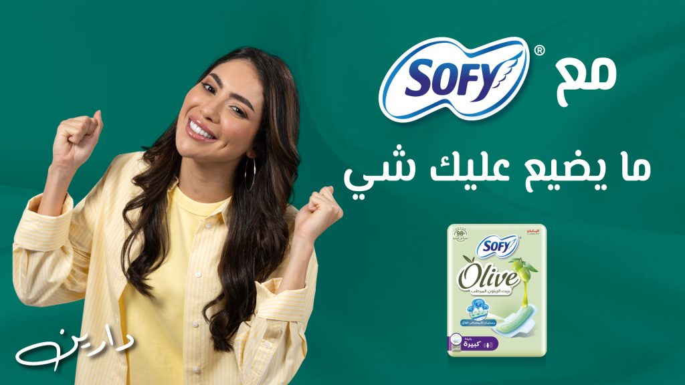
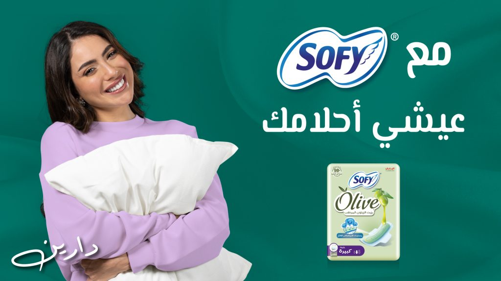
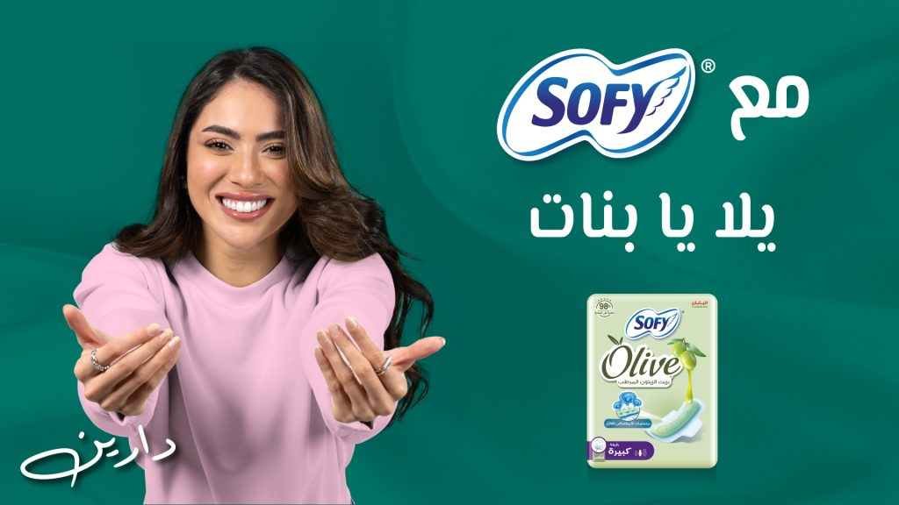

خرافةالاستحمام أثناء الدورة الشهرية يوقفها.
الحقيقةغير صحيح. النظافة الشخصية من أهم ما تعتنين به، والاستحمام اليومي بماء دافئ مفيد لكِ.





خرافةالاستحمام أثناء الدورة الشهرية يوقفها.
الحقيقةغير صحيح. النظافة الشخصية من أهم ما تعتنين به، والاستحمام اليومي بماء دافئ مفيد لكِ.
خرافةالمشي أو أي نشاط عادي أثناء الدورة مضرّ.
الحقيقةبالعكس، النشاط البدني يسهّل عليكِ أيام الدورة.
خرافةيجب أن تأكلي كمية أكبر أثناء الدورة.
الحقيقةالمهم نوعية الطعام لا كميته.
من أفضل ما في فوط سوفي الحماية من التسرّب. تُبقيني جافة ومرتاحة لساعات، وهذا يمنحني الثقة في الأيام المزدحمة وخلال الليل. والمادة القابلة للتنفس تساعد أيضاً على تقليل التهيّج، فتناسب البشرة الحساسة.
مترجمة من الإنجليزيةOne of the best things about Sofy pads is the leak protection. They keep me feeling dry and comfortable for hours, which gives me confidence during busy days and overnight use. The breathable material also helps reduce irritation, making them suitable for sensitive skin.
أحب سوفي كثيراً. جرّبت علامات أخرى مشهورة مثل Whisper وStayfree. سوفي ناعمة، تمتص بسرعة، حجمها أكبر، والشريط اللاصق يبقى ثابتاً لمدة طويلة. والجدير بالذكر أنها تحافظ على شكلها في أي وضعية جلوس أو نوم، ومريحة للنوم أيضاً. Whisper جيدة لكن غطاءها الجاف يسبب مشاكل، وStayfree لا تحافظ على شكلها وتتمزق خلال ساعات وتسبب طفحاً. أحب سوفي وأراها تستحق…
مترجمة من الإنجليزيةI really like sofy. Used other most popular brands like whisper n stayfree. Sofy is soft, absorbs quickly, bigger is size, gum stay intact, long use. Worth to mention it stays in shape even in any position you seat or sleep. Easy to sleep with too. Whisper is good but its dry cover cause all issues and stayfree neither stay in shapes, tear within hours, cause rashes. I like sofy n find it worth re
منذ أن بدأت استخدام سوفي توقفت عن استخدام أي علامة أخرى. هي الأفضل للتدفق الغزير، سواء استخدمتِ الفوط الرقيقة أو العادية. أنصح بها بشدة.
مترجمة من الإنجليزيةEver since I started using sofy ..I stop using any other brand out there. These are best for heavy flows , doesn’t matter if you are using the thin pads or regular ones .Highly recommended .
اشتريت فوط سوفي مؤخراً وأنا سعيدة بهذا الشراء. الفوط ناعمة ومريحة عند ارتدائها لساعات طويلة، وتمتص جيداً وتُبقيني جافة. تعجبني الأجنحة أيضاً لأنها تثبّت الفوطة وتمنع التسرّب. المقاس يوفر تغطية جيدة والعبوة عملية. بشكل عام منتج يُعتمد عليه وسأشتريه مرة أخرى.
مترجمة من الإنجليزيةI bought these Sofy sanitary pads recently and I’m happy with the purchase. The pads are soft and comfortable to wear for long hours. They absorb well and keep me feeling dry. I also like the wings because they help keep the pad in place and prevent leaks. The size provides good coverage and the packaging is convenient. Overall, it’s a dependable product and I would buy it again.
من أفضل ما استخدمت. جرّبت Tampax وSirona وSafepee، ولا شيء يضاهي سوفي. من الأفضل.
مترجمة من الإنجليزيةIts one of the best i have used, i tried tampex, sirona, safepee, nothing matches sofy. One if the best
أحب هذه العلامة! عادةً أُصاب بحساسية عند استخدام الفوط، لكن ليس مع سوفي.
مترجمة من الإنجليزيةI love this brand! I usually get allergies when I use pads, but I don't with Sofy.
سوفي نوعية جدا ممتازه ناعمة ومريحة ولا تسبب حساسية أبدا مقاسها صغير
مريحة جداً ولا تسبب طفحاً.
مترجمة من الإنجليزيةVery comfortable and free from rashes